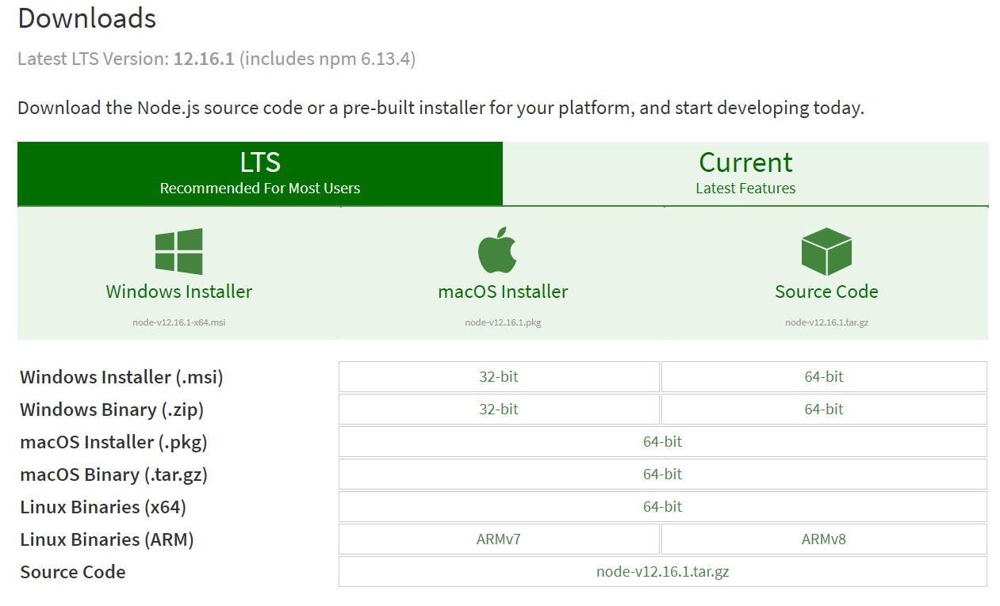
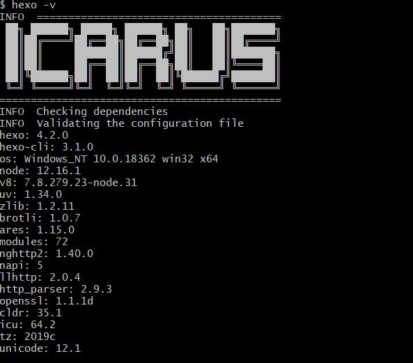
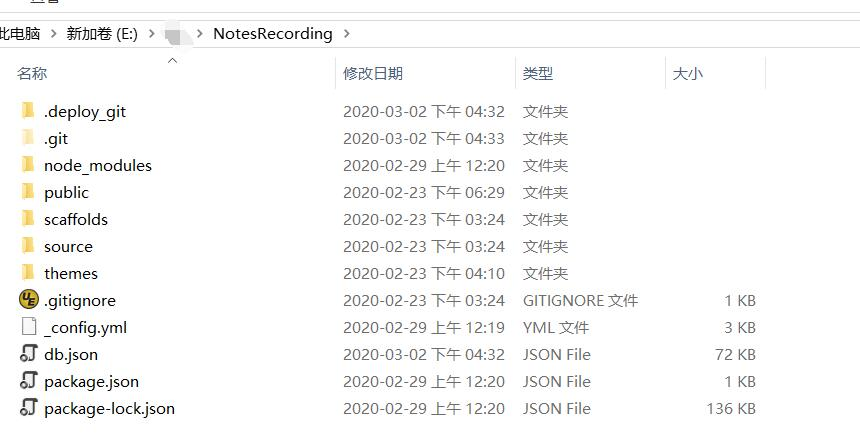

Hexo本身是一个静态博客生成工具，具备编译 Markdown、拼接主题模板、生成 HTML、上传 Git 或 FTP 等基本功能。本博客将不会介绍git实用技巧而是着重于介绍在Windows上hexo的搭建及测试过程
1、Node.js 安装
首先搭建hexo个人博客网站需要电脑中有Node.js环境，而Node.js即使是一个没有写过前端界面的人也可以完全傻瓜式安装完成的。参照官网下载对应版本Node.js。

另外如果你想要进一步学习Node.js这个强大的服务器端的JavaScript绚丽技术以及体验高性能服务配置技术，请移步这里
,一路Next安装即可。最后在控制台或bash命令行上输入：node --version(或node -v)，以查看Node.js版本来验证否配置完成。

npm的install或者uninstall需要在安装Nodejs的目录下才能行，需要有package.json存在。
如果是在新电脑上安装之前的环境，直接npm
install就能根据打包好的包的名字进行安装。npm install即可。
2、Hexo安装
在安装Node.js的时候一般来说会自动安装一个叫做npm的软件安装程序，功能类似于python中的pip以及linux下的apt-get。然后通过在本地路径打开命令行或git
bash命令行，并输入：npm install hexo-cli -g，CLI = Command
Line Interface为命令行界面。
2.1 Hexo初始化
在本地找个合适的位置新建一个文件夹，作为Hexo博客存放的位置，这里名为NotesRecording，并在此文件夹下打开控制台或bash命令行，并输入:
hexo init NotesRecording，然后输入:
hexo --version即可查看Hexo版本，如下: (这里采用了 icarus
主题，因此和你现在能看到的可能有所出入。)

在控制台或bash命令行输入：npm install，指定文件夹目录下有：

node_modules: Hexo的依赖包，和插件
public：存放生成的页面,这些index.html都是要上传到服务器端的
scaffolds：生成文章的一些模板
source：用来存放编辑好的文章
source/_post：用来存放正式发布的文章
themes：存放喜欢的主题，比如本文的 icarus
_config.yml: Hexo博客的配置文件
接着再运行：hexo server
，等待几秒之后，通过按照提示在本地浏览器打开 http://localhost:4000/
网址，即可预览初始化好的Hexo博客界面。
2.2 Hexo配置以及主题修改
- 修改为中文：如 : language: zh-CN
- 修改Hexo的主题，可以从 官方主题 处寻找并下载。然后放置在themes路径下并在_config.yml配置文件中设置：
1 | |
- 设置Hexo关联git
仓库，设置好关联的Git账号之后，就可以将每次写好的博客以及对Hexo的配置进行保存，方便后续进行回顾和修改。需要先安装hexo关联的git，命令如下：
npm install hexo-deployer-git --save，在_config.yml文件中找到如下对应的地方，并修改:
1 | |
配置好之后在控制台或者bash命令行中输入：Hexo -g -d，按照新的修改生成博客。
+ 修改icarus配置文件，详见飞鱼的博客
+
在写博客时难免会有一些图片需要添加，Hexo在添加本地图片时需要修改两个地方：
找到Hexo下的_config.yml里的post_asset_folder，把这个选项从false改成true。 安装一个Hexo的插件
npm install hexo-asset-image --save即可。将图片放入这个文件夹，然后引用
3、环境配置好后就可以开始写博客啦
3.1 首先创建一个新的博客
1 | |
- 本地文件夹中会出现一个名为“My New Post.md”的文档，如果在上述Hexo配置过程中开启了本地图片加载功能,则还会生成一个同名的文件夹，用来存放在.md文档中要上传的照片；
- 另外使用命令还会自动在md文档中生成一些头文件，包含属性信息，如下，可以更好地帮助构建Hexo界面上的文档显示。 新建文档时手动就该就行，自定义文件头的位置位于：/scaffolds/post.md`。如果是直接新建md文件，则只能手动拷贝一个合适的头文件到新建文档的最前面，就能正常显示了。
1 | |
3.2 博客预览
1 | |
通过在浏览器中打开 http://localhost:4000/ , 即可预览到刚刚创建好的博客内容，如有问题，可立马修改。
使用-p可以修改端口号。
3.3 生成Hexo文档
1 | |
3.4 部署到远程服务器上
1 | |
- 打开对应的gitname.github.io即可查看博客啦。
4、注意事项
- Hexo每次deploy，generate之后会加原来的文档资料全部覆盖掉，因此为了便于找回之前的内容，方便进行版本管理。建议使用github进行文档和操作同步，即在本地博客目录下同时初始化一个git仓库，每次更新完博客之后，随手进行仓库的同步更新，这样的话，将会极大地方便后续博客管理。
- 当你将写好的MarkDown文章推送到Hexo的时候，会发现Hexo默认显示了全部的文档内容，这对于博客内容比较多的人来说，显然是不合适的，因此有一个解决方案是：采用Html的语法，在合适的地方添加
，当然也可以在hexo中设置
<!--more-->。 - 在generate之前最好再清理一下本地缓存，以免由于缓存更新延迟造成“误会”，
hexo clean。 - 如果出现下面的问题(在12.16.1版本上出现的非常频繁)，那么需要找到Nodejs的安装包，点击repair才能解决。
1 | |
5、问题记录
我个人常用的工作流是本地用Typora写好博客，然后用hexo部署到网页端。
5.1 Markdown冲突
- Typora在写博客时可以手动添加目录，使用
[TOC]，为了在hexo发布的时候页面也能显示目录，需要在.md文件的头部添加toc: true的标注。但是经过hexo发布之后，目录无法显示，目前考虑是一个不兼容的问题。如果想在发布的时候自动显示就不要手动添加[TOC]标记了。 - Typora中的\(\LaTeX\)代码公式渲染出来非常漂亮，但是经过hexo发布之后公式就出现了排版错误的情况。
- 要么是$$符号无法识别，要么是渲染出来和本地渲染结果不一样。由于我的hexo+icarus的版本比较老了，目前一些比较新的解决方案均无法实现，找了好久，试了很多都不行，最后找到一个适用于我的解决方案：主要问题应该就是渲染的问题，\(\LaTeX\)代码写的应该没问题。首先
npm uninstall卸载掉和math相关的所有库，e.g. hexo-math、hexo-filter-mathjax等，然后和官方的hexo-theme-icarus比较，看看少了哪些dependencies，e.g. hexo-renderer-marked、hexo-renderer-stylus、hexo-renderer-inferno等。pandoc需要独立安装。
1 | |
- 最后得到package.json如下：（让然也可能有一些没用的dependencies）吓得我赶紧保存下来。
1 | |
- Typora中使用markdown的语法进行脚注标记是正常的，但是hexo发布之后无法正常渲染。这个是hexo的问题，不是icarus主题的问题，有人曾说换用hexo-renderer-markdown-it可以解决，但是我尝试了，没用。但其实有用的是hexo-footnotes这个插件。
1 | |
- 一些关于markdown-it的插件解释。一顿操作之后的package.json文件。依然没反应。hexo-footnotes已经不再维护了。
1 | |
- Typora中插入公式、图表等markdown语法都没什么问题，但是hexo部署完之后就发现各种缩进问题，可能是因为空行导致的，因此如果发现有缩进错误，就尝试增加一个空行，可以解决问题。
5.2 图片渲染不兼容
问题
本地Typora写的博客，使用到hexo部署之后，其中的图片不能正确的显示。
Typora中使用或者是使用html的语法<div align=center><img src="image relative path" width="100%" height="100%"></div>都可以加载图片，其中使用后者的原因是可以控制图片的位置和大小，排版出来比较美观。
后来喜欢用github的图床实现图片保存，但是后面发现图片数量增加时，图片保存的时候，名字不好取，而且非常不好管理，容易出现冲突，因此后面是否继续使用，打个问号。
但是hexo部署之后，网页端就打不开了，本地预览也不行。（出现问题的原因为图片的链接不正确。）
hexo部署带有图床链接的图片时，也会自动重新拷贝一份图像到新的文件夹下，并不会直接使用图床链接。图片依旧加载不出来。
分析原因
使用的hexo-asset-image插件有问题（这个插件会给添加的图片一个错误的前缀，导致无法正确链接，只支持版本较低的hexo，e.g.
3.0，而我使用的是4.2.+，目前hexo-asset-image这个库已经暂停维护了）。有解决方案称，应该使用这个插件hexo-asset-img，于是按照要求首先使用npm uninstall hexo-asset-image卸载之前的插件，然后使用npm install hexo-asset-img安装新的插件。但是发现图片依然加载失败，后面发现是在插入图片时，原先使用的都是添加了./最为前缀的，这里完全不需要，直接写文件夹名字加图片名，比如：，按照正常的流程清空-生成-部署，之后图片就正常显示了。But，如果typora中使用html的方式引入图片，一开始的命令是<div align=center><img src="./Bspline/viz_basis_function.svg" width="100%" height="100%"></div>但是这样只能在typora中看到，hexo部署之后就看不到了.使用<div align=center><img src="viz_basis_function.svg" width="100%" height="100%"></div>之后，typora中看不到，但是hexo部署之后可以。对于排版有一定要求的我，并不满意这样的解决方案。
定位问题
通过检查几种可能得解决方案后发现，主要是这些插件在生成图片链接的时候多多少少有点问题，问题如下所示。发现一个和我相同问题的老哥， 尝试了 一下，他的解决方案并不能解决我的问题，于是我开始小改了一下hexo-asset-image的代码。
可以发现，使用旧的插件部署之后，图片链接变成了
http://localhost:4000/blogs/2023/03/06/B-Spline/viz_basis_function.svg，而使用新的插件部署之后，在路径上自动添加了一个前缀
http://localhost:4000/blogs/2023/03/06/B-Spline/B-Spline/viz_basis_function.svg
解决方案
可以重新仿照hexo-asset-image写一个插件，也可以直接hack掉他的源码，修改一下对应的路径。使用方法为：
1 | |
在node_modules/hexo-asset-image找到index.js这个文件，将里面的东西换成下面的内容：
1 | |
特别是第50行左右的地方：注释掉的就是之前的出问题的地方。（其他问题可同理解决。）
1 | |
But，突然发现这样之后再Hexo本地预览的时候，没法正常显示照片，就想着能否不用Html来居中图像，就发现了魔改icarus的模板的方案，需要在icarus的主体路径下.styl文件，在187行附近添加如下：
1 | |
然后icarus默认的设置全部图像都自动居中刻，一些简单的图片不需要html也可以实现居中，复杂彩涉及到html语言了。
5.3 其他
- hexo中设置related_posts似乎在生成时有问题，但是不影响部署。（换了一台电脑，问题消失了）
- 每个博客添加一个缩略图（和文章题目一起显示的那个）。这个属于主题的范畴与hexo无关了，icarus默认使用的事thumbnail.svg这个图像做的缩略图。我手动换成了其他的格式。如果有不一样的就手动设置就行。
在每个md文档的前面，有些属性可以设置。其中：
当只设置 banner 时，文章的缩略图 和 banner 将都是 banner 所设置的图片； 当只设置 thumbnail 时， 文章只有缩略图，无banner； 当同时设置 banner 和 thumbnail 时，banner 为 banner图，thumbnail 为缩略图， 两者各自生效；
例如这里就是：banner:/(article_year)/(article_month)/(article_day)/(article_name)/xxx.png
这里有点难受的就是，参考了这里的方法，在hexo部署的时候报了一个错误，而我又没解决，因此就放弃了。
缩略图没有显示的主要原因还是因为图片的链接错了，需要检查几个地方：
- 在hexo本地预览时，F12打开源码，找到一个没正常显示图像的位置，比如这里：
2
3
4
5
6
7
8
9
10
11<article class="media"> <a href="/blogs/2020/02/22/Hexo%E5%88%9D%E4%BD%93%E9%AA%8C/" class="media-left">
<p class="image is-64x64">
<img class="thumbnail" src="/blogs/2020/02/22/Hexo%E5%88%9D%E4%BD%93%E9%AA%8C/hexo-logo.png" alt="Hexo初体验">
</p>
</a><div class="media-content">
<div class="content">
<div><time class="has-text-grey is-size-7 is-uppercase" datetime="2020-02-22T07:38:32.000Z">2020-02-22</time></div>
<a href="/blogs/2020/02/22/Hexo%E5%88%9D%E4%BD%93%E9%AA%8C/" class="title has-link-black-ter is-size-6 has-text-weight-normal">Hexo初体验</a>
</div>
</div>
</article>可以发现图片的路径是
/blogs/2020/02/22/Hexo%E5%88%9D%E4%BD%93%E9%AA%8C/Nodejs.png的格式，即部署时会自动转换成这个路径，那么我们需要做的就是在每个博客的开头设定/blogs之后的路径即可，比如本文就是thumbnail: /2020/02/22/Hexo初体验/hexo-logo.png，还要注意冒号后有一个空格。
- 对照上面的检查thumbnail的路径，一定写对，大概率缩略图就能显示了。
- 站内搜索，而不是直接联网搜索。
首先在主题的_config.yaml文件中找到search，设置
use: local，icarus主题大约位于73行左右。然后在博客的_config.yaml文件中添加如下，文件结尾处即可：
1 | |
出现一个错误，导致无法部署成功，原来是_config.yml中的一个时间设置的不对，原来不知道为什么是beijing，改成
timezone: 'Asia/Shanghai'就好了，详见。部署时出现错误
WARN No layout: index.html
解决方案：主题一定要选对，并且安装对，如果安装过程中提示错误，那就按照对应的说明安装相应的依赖库就行。
- 执行
hexo -g时出错，错误为pandoc exited with code null
解决方案：安装pandoc就行。参考这里。
5.4 换台工作电脑
工作一台，家里一台，随时想写博客怎么办？只需要按照前面的步骤安装npm，pandoc，同步修改对应的插件（很重要），把日志克隆下来，开始写，写完部署，然后把本地的仓库使用git同步更新即可。
6、参考博客
- 小茗同学
- fangzh的个人博客
- 韦阳的博客
- ICARUS美化
- 图片渲染不兼容的可能解决方案1：改源码
- 图片渲染不兼容的可能解决方案2：改源码
- 站内搜索源于这里
- 博客缩略图的设置，以及这里，icarus官方issue中使用缩略图的讨论